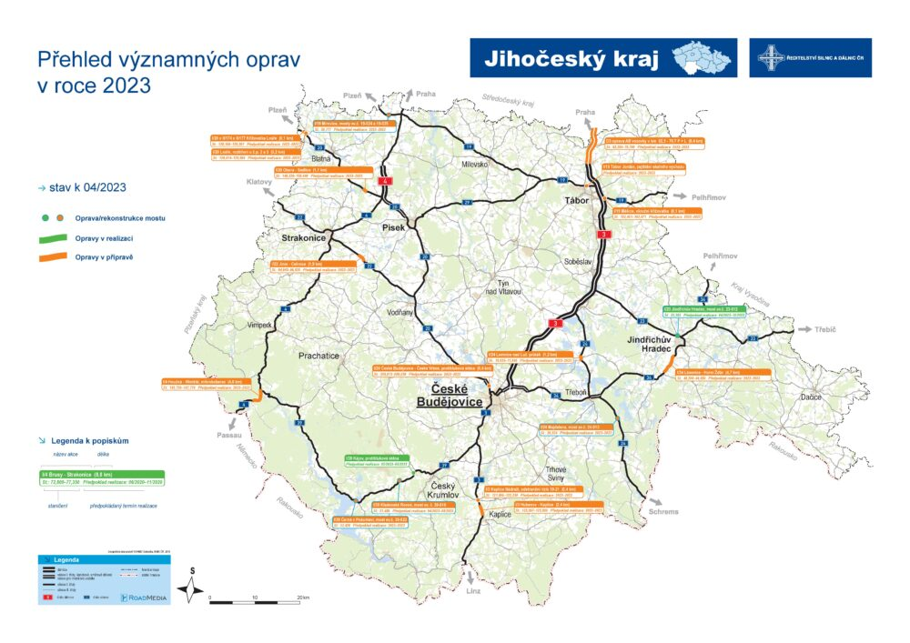

Problémy:
Dopravní perifernost - silniční infrastruktura
Odliv obyvatel, postupný zánik škol
Závislost na sezónním cestovním ruchu
Sucho, pokles hladin rybníků
Dopravní perifernost - silniční infrastruktura
Odliv obyvatel, postupný zánik škol
Závislost na sezónním cestovním ruchu
Sucho, pokles hladin rybníků
Produkce dostatku potravin pro kraj
Nízké ceny pozemků
Energie z Temelínu
Nízká míra nezaměstnanosti
Žádná lokální aglomerace
Nedostatek technicky vzdělaných lidí
Nízká digitalizace u firem
Špatná rozvodní síť elektrické energie v periferiích

Rozšíření jaderné elektrárny Temelín
Investice do recovací silnic a železnic
Získání příspěvků z evropských fondů
Rozvoj zelené ekonomiky